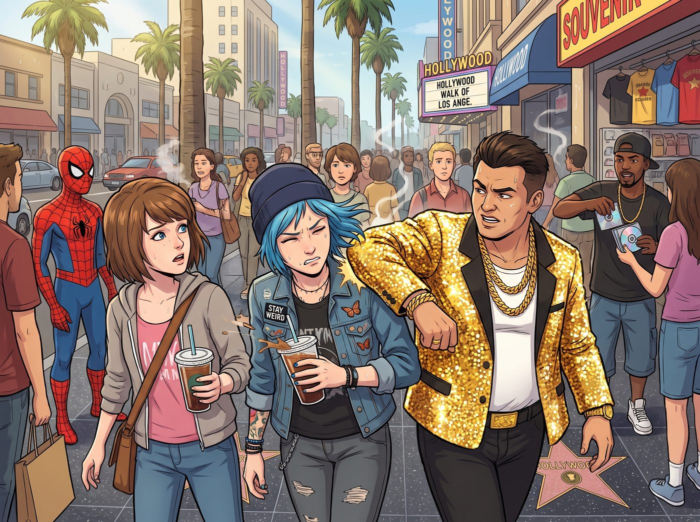
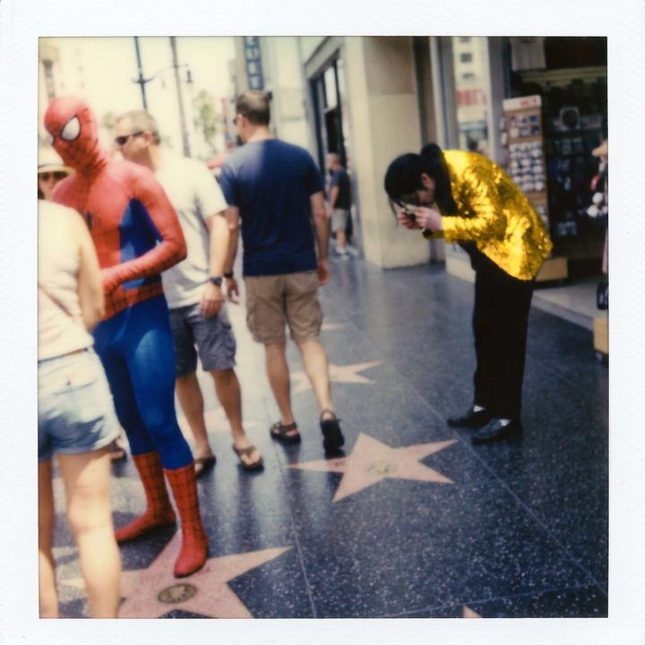
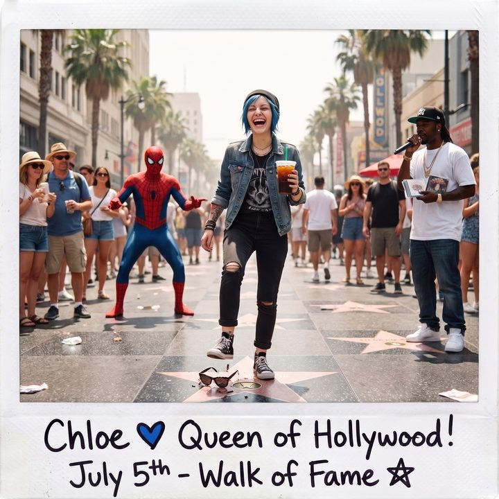

Cucci先生



洛杉磯，好萊塢星光大道（Hollywood Walk of Fame）。
作為全球最著名的「遊客屠宰場」，這裡擠滿了穿著劣質蜘蛛人緊身衣的街頭藝人、強行往你手裡塞盜版 CD 的饒舌歌手，以及空氣中瀰漫著的大麻味與廉價防曬霜的氣味。
Chloe 和 Max 手裡拿著剛買的超大杯冰美式，正低著頭研究地上的星星。就在這時，一個穿著浮誇亮片夾克、戴著大金鏈子的男人，看準了這兩個看似毫無防備的年輕女孩，故意加快腳步，狠狠地撞上了 Chloe 的肩膀。
「啪！」
伴隨著一聲清脆的塑料碎裂聲，男人手裡的一個東西掉在了地上。
「嘿！走路不長眼嗎？！」男人立刻誇張地大吼起來，吸引了周圍人的目光。他指著地上那副摔成兩半的墨鏡，痛心疾首地喊道：「我的天！我剛買的 Gucci 墨鏡！限量版的！被妳這個蠢貨撞碎了！」
隨著他的吼聲，旁邊的人群裡立刻走出來兩個身材魁梧、滿臉橫肉的同夥。他們一左一右地將 Chloe 和 Max 堵在了人行道邊緣，形成了一個經典的「街頭碰瓷（Bump Scam）」包圍圈。
「聽著，小妹妹。」亮片夾克男步步緊逼，語氣裡充滿了威脅，「這副墨鏡價值 400 美金。看在妳們是遊客的份上，給我 200 美金現金，我們就當交個朋友。否則……這條街上可是有很多我們『朋友』的。」
這是一個極其老套但非常有效的騙局。大多數遊客在面對這種突如其來的暴力威脅和群體包圍時，都會因為恐懼而乖乖掏錢破財消災。
但他們今天挑錯了對象。
他們撞上的是阿卡迪亞灣最無法無天的龐克太妹，以及一個擁有「鷹眼級視覺觀察力」的攝影師。
Chloe 根本沒有被那兩個壯漢嚇到。她冷笑了一聲，剛準備爆粗口，Max 卻輕輕拉了拉她的衣角。
Max 沒有說話，而是異常冷靜地蹲下身，撿起了地上那半副摔碎的墨鏡。
作為一個整天跟鏡頭、光學玻璃和偏光片打交道的資深攝影師，Max 的眼睛比鷹還要毒。她用手指輕輕刮了一下碎裂的鏡片，又湊近看了一眼斷裂的鉸鏈。
「Chloe。」Max 站起身，將那半副墨鏡舉到半空中，聲音不大，卻條理清晰得猶如法醫在宣讀驗屍報告，「首先，這不是玻璃鏡片，這是最劣質的丙烯酸樹脂（Acrylic），連基本的 UV 塗層都沒有，成本大概 1.5 美元。」
亮片男愣了一下，臉色微變：「妳在胡說八道什麼……」
「其次，」Max 將墨鏡的鏡架翻過來，指著上面燙金的 Logo，「這個單詞拼的是『Cucci』，不是 Gucci。而且，」Max 用指甲摳了摳那個斷裂的鉸鏈處，「這裡有明顯的、已經乾涸發黃的 502 強力膠痕跡。這說明在撞到我們之前，這副墨鏡就已經是斷的，你只是把它虛掩在手裡。」
Max 最後甚至從口袋裡掏出了剛才盲拍的一張寶麗來照片。照片的背景裡，正好拍到了這個亮片男在十步之外，正低頭往墨鏡鉸鏈上塗膠水的模糊身影。
「證據確鑿。」Max 像個冷酷的偵探一樣宣佈，然後退後一步，把舞台讓給了 Chloe。
Chloe 簡直要為 Max 鼓掌了。有了這套無懈可擊的物理證據，她骨子裡的街頭混混基因，瞬間與這幾天從 Lily 那裡學來的「行政黑魔法」發生了奇妙的化學反應。
「聽到了嗎，『Cucci』先生？」
Chloe 雙手抱胸，嘴角勾起一抹極度囂張的龐克冷笑。她不僅沒有後退，反而往前邁了一大步，直接逼到了亮片男的臉前。
「跨州運輸並持有未經授權的仿冒商標產品，這是聯邦重罪。」Chloe 模仿著 Lily 那種軟糯卻致命的語氣，雖然用詞有些生硬，但在這群街頭混混聽來卻極具威懾力，「而你剛才試圖用暴力脅迫我們支付 200 美金，這叫作二級敲詐勒索（Extortion）。」
「妳……妳以為妳是誰？警察嗎？」亮片男有些結巴了，旁邊那兩個壯漢也被 Chloe 這種「反向施壓」的瘋狂氣場震懾住了，面面相覷。
「我不是警察。我是國稅局（IRS）最喜歡的那種熱心市民。」
Chloe 臉不紅心不跳地開始了最高級別的嘴砲輸出：「你在這條街上每天大概能碰瓷五隻『肥羊』，一天現金收入 1000 美金。一年就是 36 萬美金的『未申報現金收入』。你猜，如果我現在給 IRS 稅務欺詐熱線打個電話，他們會不會派武裝特警來查封你那輛停在下一個街區的破本田喜美？」
提到「IRS」，那三個騙子的臉色瞬間煞白。
在美國的街頭，你可以不怕警察，但絕對不能不怕國稅局。那個部門可是連黑手黨老大都能直接送進監獄的終極怪物。
「現在，」Chloe 伸出手，攤開手掌，眼神變得猶如惡狼般兇狠，「你浪費了我們喝咖啡的時間，對我們的心理造成了嚴重的驚嚇。我們現在需要 50 美金的『精神損失費和封口費』。馬上掏錢，否則我現在就報警查你的稅。」
局勢在三分鐘內發生了極度荒謬的 180 度大反轉。
原本是來敲詐遊客的騙子，現在反而被一個染著藍頭髮的女孩堵在街角反向勒索，甚至還被扣上了一頂「逃漏稅」的恐怖帽子。
「瘋子……妳們兩個神經病！」
亮片男看著 Chloe 那副「不給錢就同歸於盡」的瘋狂模樣，嚇得倒抽了一口涼氣。他一把拍掉 Chloe 的手，連地上的「Cucci」墨鏡殘骸都不要了，轉身推開人群，帶著兩個同夥像見了鬼一樣落荒而逃。
「切，這點心理素質還出來混好萊塢。」
Chloe 甩了甩頭髮，滿臉不屑地對著他們的背影比了個中指。
Max 站在旁邊，看著地上那副劣質墨鏡，終於忍不住爆發出一陣大笑：「Chloe！妳剛才那句『未申報現金收入』簡直太絕了！Lily 如果在這裡，一定會為妳驕傲的！」
「哈哈哈哈！我這叫『行政與街頭的完美融合』！」Chloe 得意地大笑著，一把攬住 Max 的肩膀，「走！為了慶祝我們剛剛把一個詐騙犯嚇得尿褲子，我們去吃好萊塢最貴的熱狗！」
這就是二號車廂訓練出來的怪物。
她們也許無法對抗美債的收益率，也許逃不過系統的大數據監控。但如果只是區區幾個街頭騙子？
Max 舉起寶麗來相機。
鏡頭裡，Chloe 一腳踩碎了那半截「Cucci」墨鏡，笑得像個剛剛佔領了星光大道的街頭女王。
「喀嚓。」
照片吐出。Max 在背面寫下： 『規則第 75 條：在洛杉磯的街頭，不要試圖去騙一個懂光學的攝影師，更不要去勒索一個剛學會了「IRS 稅務恐嚇」的龐克太妹。我們沒有超能力，但我們懂得如何把騙局硬生生地塞回你們的喉嚨裡。』